2024 Higher Biology - Paper 2 questions
Source: Scottish Qualifications Authority (SQA) / Qualifications Scotland. This is a StemInteract HTML companion, not an official HTML edition. Selectable text is supplied alongside original page images. Use the images or original PDF for equations, powers, fractions, vector notation, tables and diagrams; text extraction cannot fully preserve mathematical layout.
Jump to a question
PDF page 1
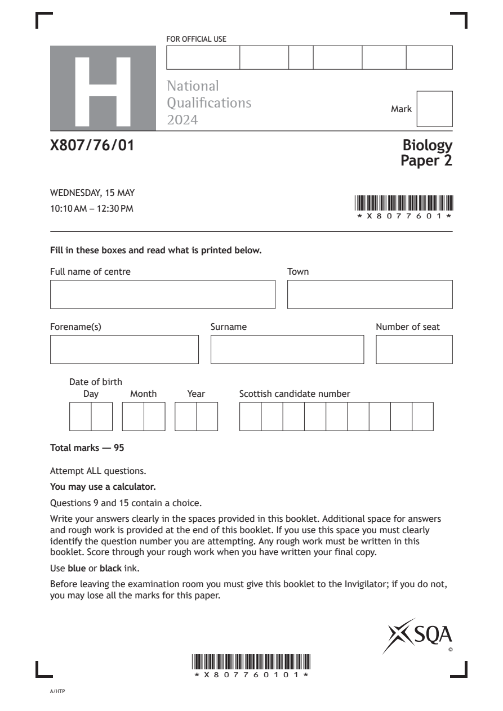
Selectable page text
FOR OFFICIAL USE
H
National
Qualications
Mark
2024
X807/76/01 Biology
Paper 2
WEDNESDAY, 15 MAY
10:10 AM – 12:30 PM
*X8077601*
Fill in these boxes and read what is printed below.
Full name of centre Town
Forename(s) Surname Number of seat
Date of birth
Day Month Year Scottish candidate number
Total marks — 95
Attempt ALL questions.
You may use a calculator.
Questions 9 and 15 contain a choice.
Write your answers clearly in the spaces provided in this booklet. Additional space for answers
and rough work is provided at the end of this booklet. If you use this space you must clearly
identify the question number you are attempting. Any rough work must be written in this
booklet. Score through your rough work when you have written your final copy.
Use blue or black ink.
Before leaving the examination room you must give this booklet to the Invigilator; if you do not,
you may lose all the marks for this paper.
©
*X807760101*
A/HTPPDF page 2
Paper 2, Question 1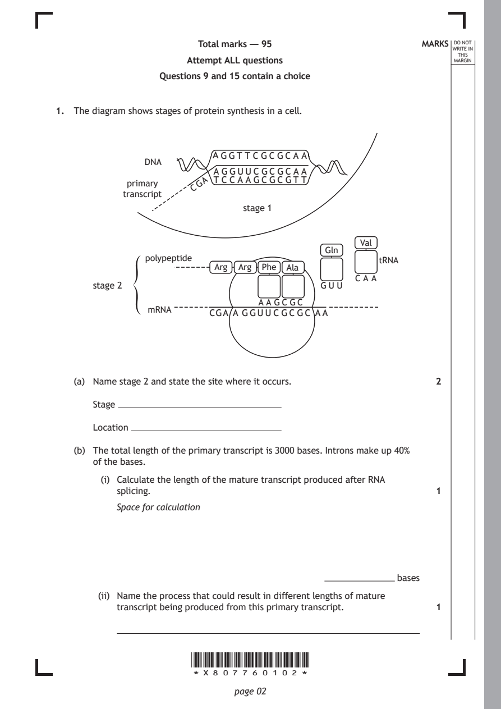
Selectable page text
Total marks — 95 MARKS _{W}^{D}_{R}^{O}_{I} _{T}^{N}OT
E IN
THIS
Attempt ALL questions MARGIN
Questions 9 and 15 contain a choice
1. The diagram shows stages of protein synthesis in a cell.
AGGT T C GC GC A A
DNA
A GGUUC GC GC A A
A T C C A A GC GC GT T
primary G
C
transcript
stage 1
Val
Gln
polypeptide tRNA
Arg Arg Phe Ala
C A A
stage 2 GU U
A A GC GC
mRNA
CGA A GGUUC GC GC AA
(a) Name stage 2 and state the site where it occurs. 2
Stage
Location
(b) The total length of the primary transcript is 3000 bases. Introns make up 40%
of the bases.
(i) Calculate the length of the mature transcript produced after RNA
splicing. 1
Space for calculation
bases
(ii) Name the process that could result in different lengths of mature
transcript being produced from this primary transcript. 1
*X807760102*
page 02PDF page 3
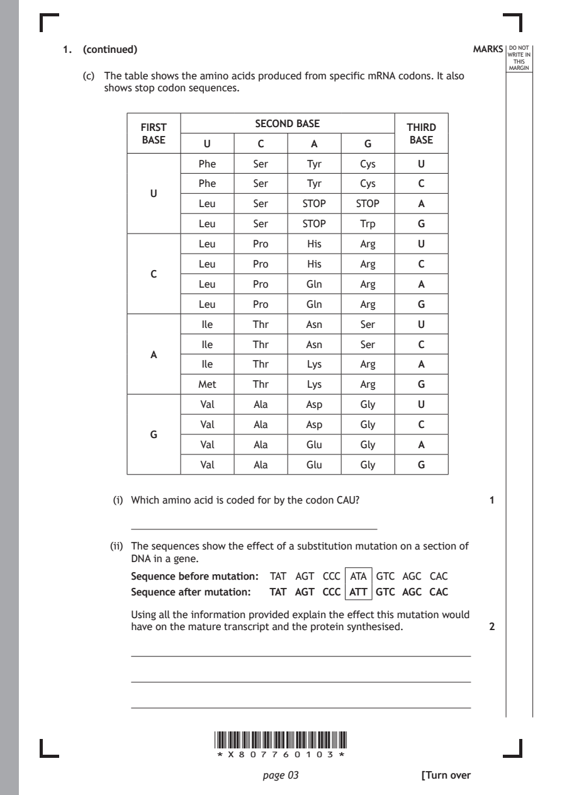
Selectable page text
1. (continued) MARKS _{W}^{D}_{R}^{O}_{I} _{T}^{N}OT
E IN
THIS
MARGIN
(c) The table shows the amino acids produced from specific mRNA codons. It also
shows stop codon sequences.
SECOND BASE
FIRST THIRD
BASE BASE
U C A G
Phe Ser Tyr Cys U
Phe Ser Tyr Cys C
U
Leu Ser STOP STOP A
Leu Ser STOP Trp G
Leu Pro His Arg U
Leu Pro His Arg C
C
Leu Pro Gln Arg A
Leu Pro Gln Arg G
Ile Thr Asn Ser U
Ile Thr Asn Ser C
A
Ile Thr Lys Arg A
Met Thr Lys Arg G
Val Ala Asp Gly U
Val Ala Asp Gly C
G
Val Ala Glu Gly A
Val Ala Glu Gly G
(i) Which amino acid is coded for by the codon CAU? 1
(ii) The sequences show the effect of a substitution mutation on a section of
DNA in a gene.
Sequence before mutation: TAT AGT CCC ATA GTC AGC CAC
Sequence after mutation: TAT AGT CCC ATT GTC AGC CAC
Using all the information provided explain the effect this mutation would
have on the mature transcript and the protein synthesised. 2
*X807760103*
page 03 [Turn overPDF page 4
Paper 2, Question 2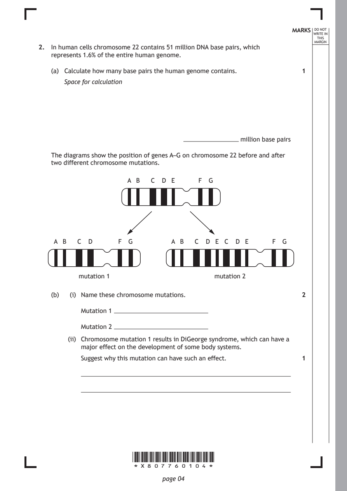
Selectable page text
MARKS _{W}^{D}_{R}^{O}_{I} _{T}^{N}OT
E IN
THIS
MARGIN
2. In human cells chromosome 22 contains 51 million DNA base pairs, which
represents 1.6% of the entire human genome.
(a) Calculate how many base pairs the human genome contains. 1
Space for calculation
million base pairs
The diagrams show the position of genes A–G on chromosome 22 before and after
two different chromosome mutations.
A B C D E F G
A B C D F G A B C D E C D E F G
mutation 1 mutation 2
(b) (i) Name these chromosome mutations. 2
Mutation 1
Mutation 2
(ii) Chromosome mutation 1 results in DiGeorge syndrome, which can have a
major effect on the development of some body systems.
Suggest why this mutation can have such an effect. 1
*X807760104*
page 04PDF page 5
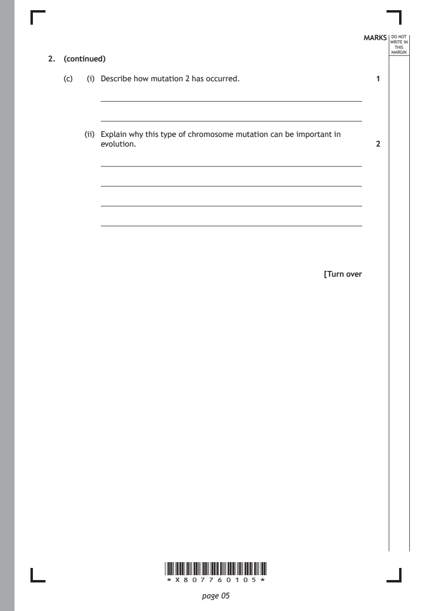
Selectable page text
MARKS _{W}^{D}_{R}^{O}_{I} _{T}^{N}OT
E IN
THIS
MARGIN
2. (continued)
(c) (i) Describe how mutation 2 has occurred. 1
(ii) Explain why this type of chromosome mutation can be important in
evolution. 2
[Turn over
*X807760105*
page 05PDF page 6
Paper 2, Question 3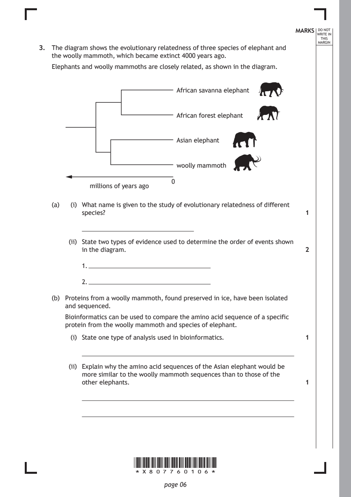
Selectable page text
MARKS _{W}^{D}_{R}^{O}_{I} _{T}^{N}OT
E IN
THIS
MARGIN
3. The diagram shows the evolutionary relatedness of three species of elephant and
the woolly mammoth, which became extinct 4000 years ago.
Elephants and woolly mammoths are closely related, as shown in the diagram.
African savanna elephant
African forest elephant
Asian elephant
woolly mammoth
0
millions of years ago
(a) (i) What name is given to the study of evolutionary relatedness of different
species? 1
(ii) State two types of evidence used to determine the order of events shown
in the diagram. 2
1.
2.
(b) Proteins from a woolly mammoth, found preserved in ice, have been isolated
and sequenced.
Bioinformatics can be used to compare the amino acid sequence of a specific
protein from the woolly mammoth and species of elephant.
(i) State one type of analysis used in bioinformatics. 1
(ii) Explain why the amino acid sequences of the Asian elephant would be
more similar to the woolly mammoth sequences than to those of the
other elephants. 1
*X807760106*
page 06PDF page 7
Paper 2, Question 4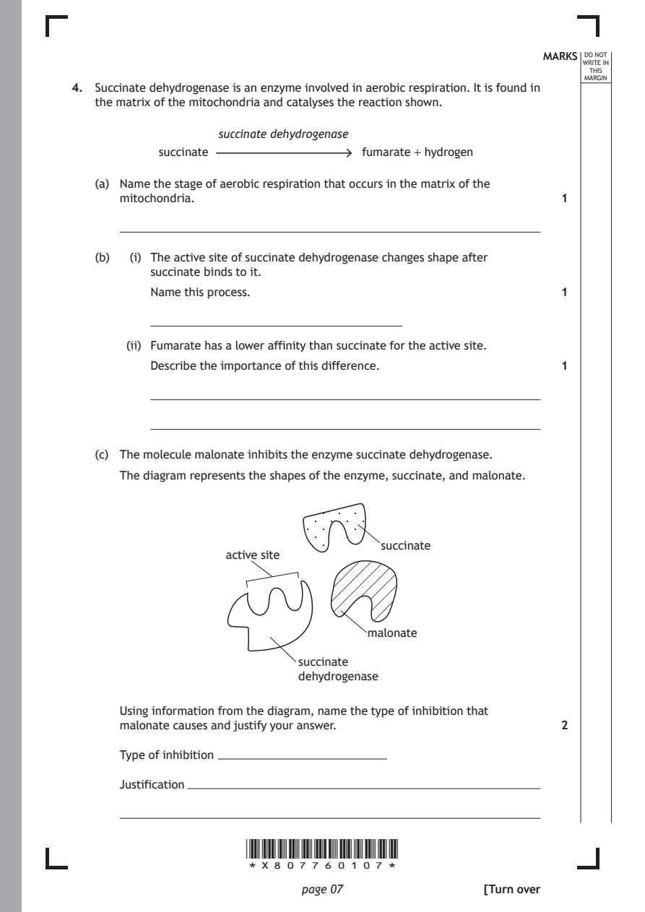
Selectable page text
MARKS _{W}^{D}_{R}^{O}_{I} _{T}^{N}OT
E IN
THIS
MARGIN
4. Succinate dehydrogenase is an enzyme involved in aerobic respiration. It is found in
the matrix of the mitochondria and catalyses the reaction shown.
succinate dehydrogenase
succinate fumarate + hydrogen
(a) Name the stage of aerobic respiration that occurs in the matrix of the
mitochondria. 1
(b) (i) The active site of succinate dehydrogenase changes shape after
succinate binds to it.
Name this process. 1
(ii) Fumarate has a lower affinity than succinate for the active site.
Describe the importance of this difference. 1
(c) The molecule malonate inhibits the enzyme succinate dehydrogenase.
The diagram represents the shapes of the enzyme, succinate, and malonate.
succinate
active site
malonate
succinate
dehydrogenase
Using information from the diagram, name the type of inhibition that
malonate causes and justify your answer. 2
Type of inhibition
Justification
*X807760107*
page 07 [Turn overPDF page 8
Paper 2, Question 5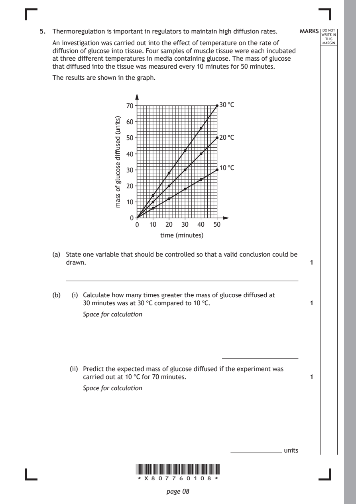
Selectable page text
5. Thermoregulation is important in regulators to maintain high diffusion rates. MARKS _{W}^{D}_{R}^{O}_{I} _{T}^{N}OT
E IN
THIS
An investigation was carried out into the effect of temperature on the rate of MARGIN
diffusion of glucose into tissue. Four samples of muscle tissue were each incubated
at three different temperatures in media containing glucose. The mass of glucose
that diffused into the tissue was measured every 10 minutes for 50 minutes.
The results are shown in the graph.
70 30 °C
60
50 20 °C
40
10 °C
30
20
10
0
0 10 20 30 40 50
time (minutes)
*X807760108*
page 08
)stinu(
desuffid
esoculg
fo
ssam
(a) State one variable that should be controlled so that a valid conclusion could be
drawn. 1
(b) (i) Calculate how many times greater the mass of glucose diffused at
30 minutes was at 30 °C compared to 10 °C. 1
Space for calculation
(ii) Predict the expected mass of glucose diffused if the experiment was
carried out at 10 °C for 70 minutes. 1
Space for calculation
unitsPDF page 9
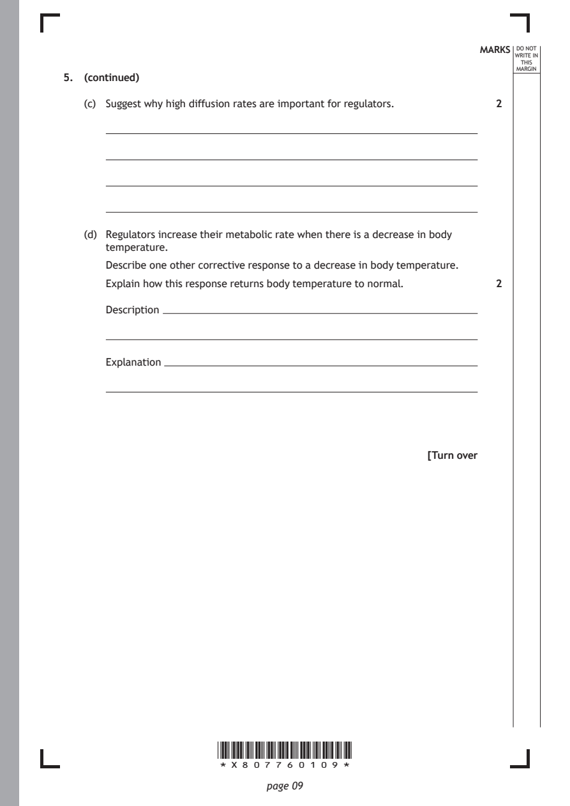
Selectable page text
MARKS _{W}^{D}_{R}^{O}_{I} _{T}^{N}OT
E IN
THIS
MARGIN
5. (continued)
(c) Suggest why high diffusion rates are important for regulators. 2
(d) Regulators increase their metabolic rate when there is a decrease in body
temperature.
Describe one other corrective response to a decrease in body temperature.
Explain how this response returns body temperature to normal. 2
Description
Explanation
[Turn over
*X807760109*
page 09PDF page 10
Paper 2, Question 6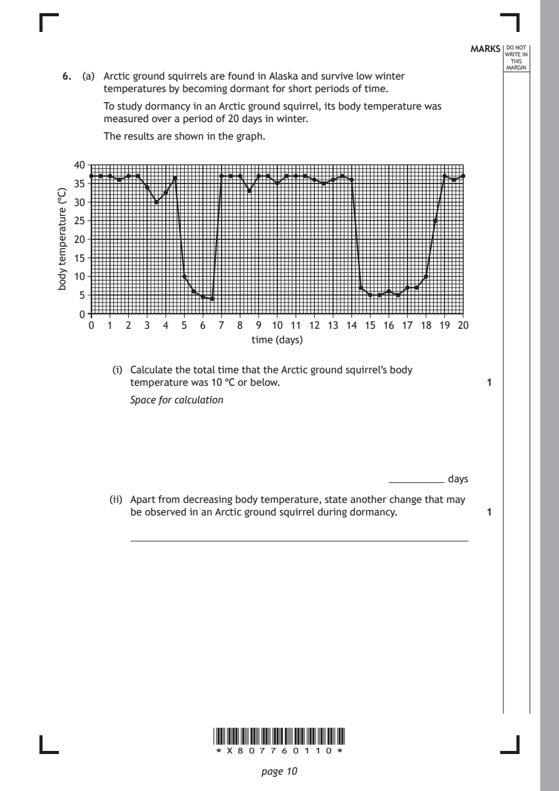
Selectable page text
MARKS _{W}^{D}_{R}^{O}_{I} _{T}^{N}OT
E IN
THIS
MARGIN
6. (a) Arctic ground squirrels are found in Alaska and survive low winter
temperatures by becoming dormant for short periods of time.
To study dormancy in an Arctic ground squirrel, its body temperature was
measured over a period of 20 days in winter.
The results are shown in the graph.
40
35
30
25
20
15
10
5
0
0 1 2 3 4 5 6 7 8 9 10 11 12 13 14 15 16 17 18 19 20
time (days)
*X807760110*
page 10
)C°(
erutarepmet
ydob
(i) Calculate the total time that the Arctic ground squirrel’s body
temperature was 10 °C or below. 1
Space for calculation
days
(ii) Apart from decreasing body temperature, state another change that may
be observed in an Arctic ground squirrel during dormancy. 1PDF page 11
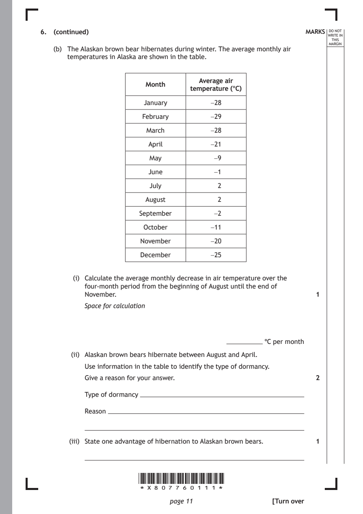
Selectable page text
6. (continued) MARKS _{W}^{D}_{R}^{O}_{I} _{T}^{N}OT
E IN
THIS
MARGIN
(b) The Alaskan brown bear hibernates during winter. The average monthly air
temperatures in Alaska are shown in the table.
Average air
Month
temperature (°C)
January −28
February −29
March −28
April −21
May −9
June −1
July 2
August 2
September −2
October −11
November −20
December −25
(i) Calculate the average monthly decrease in air temperature over the
four‑month period from the beginning of August until the end of
November. 1
Space for calculation
°C per month
(ii) Alaskan brown bears hibernate between August and April.
Use information in the table to identify the type of dormancy.
Give a reason for your answer. 2
Type of dormancy
Reason
(iii) State one advantage of hibernation to Alaskan brown bears. 1
*X807760111*
page 11 [Turn overPDF page 12
Paper 2, Question 7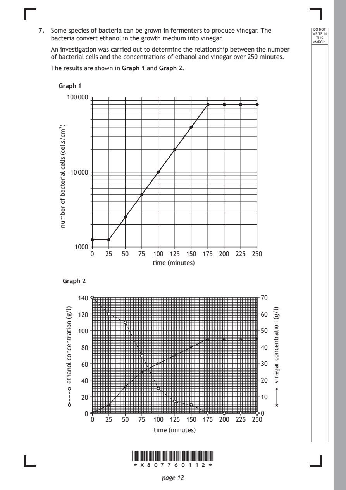
Selectable page text
7. Some species of bacteria can be grown in fermenters to produce vinegar. The DO NOT
WRITE IN
bacteria convert ethanol in the growth medium into vinegar. THIS
MARGIN
An investigation was carried out to determine the relationship between the number
of bacterial cells and the concentrations of ethanol and vinegar over 250 minutes.
The results are shown in Graph 1 and Graph 2.
Graph 1
100 000
10 000
1000
0 25 50 75 100 125 150 175 200 225 250
time (minutes)
*X807760112*
page 12
)3mc/sllec(
sllec
lairetcab
fo
rebmun
Graph 2
140 70
120 60
100 50
80 40
60 30
40 20
20 10
0 0
0 25 50 75 100 125
time (minutes)
)l/g(
noitartnecnoc
rageniv
150 175 200 225 250
)l/g(
noitartnecnoc
lonahtePDF page 13
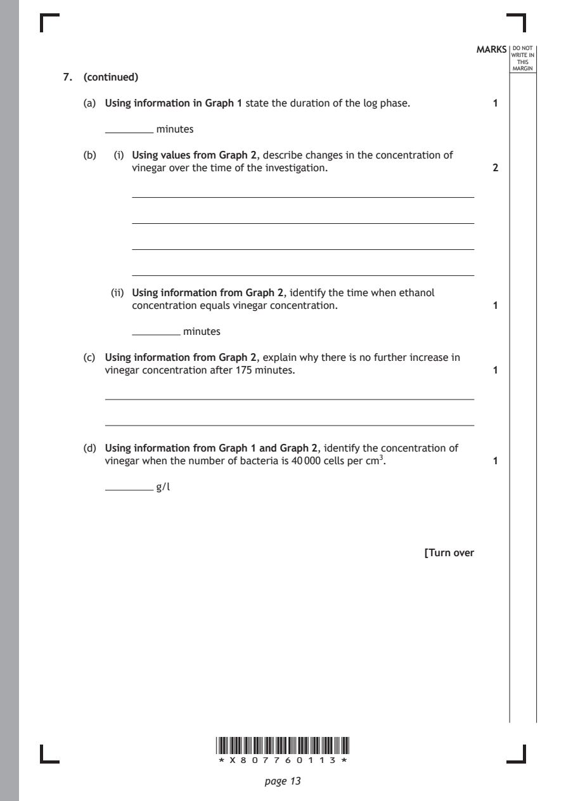
Selectable page text
MARKS _{W}^{D}_{R}^{O}_{I} _{T}^{N}OT
E IN
THIS
MARGIN
7. (continued)
(a) Using information in Graph 1 state the duration of the log phase. 1
minutes
(b) (i) Using values from Graph 2, describe changes in the concentration of
vinegar over the time of the investigation. 2
(ii) Using information from Graph 2, identify the time when ethanol
concentration equals vinegar concentration. 1
minutes
(c) Using information from Graph 2, explain why there is no further increase in
vinegar concentration after 175 minutes. 1
(d) Using information from Graph 1 and Graph 2, identify the concentration of
vinegar when the number of bacteria is 40 000 cells per cm³. 1
g/l
[Turn over
*X807760113*
page 13PDF page 14
Paper 2, Question 8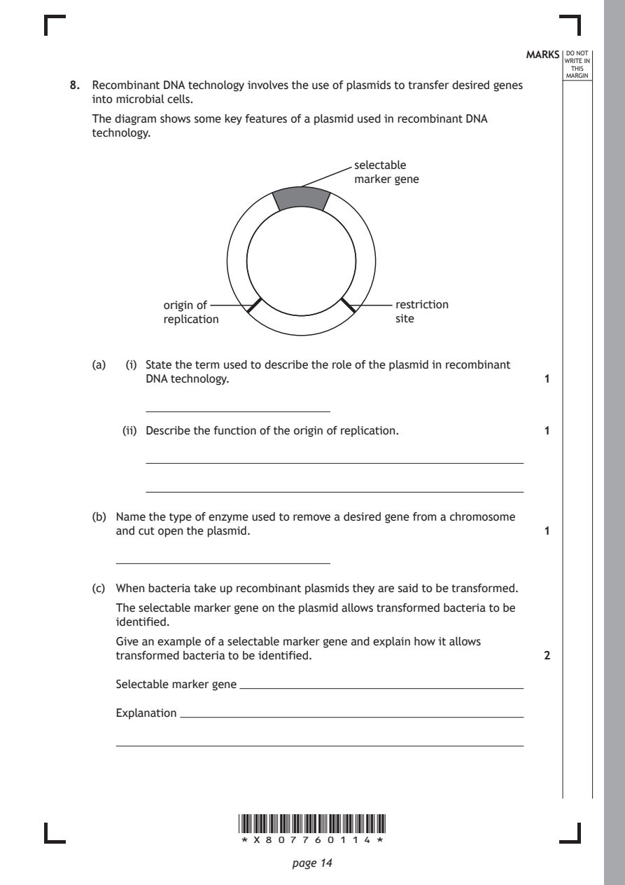
Selectable page text
MARKS _{W}^{D}_{R}^{O}_{I} _{T}^{N}OT
E IN
THIS
MARGIN
8. Recombinant DNA technology involves the use of plasmids to transfer desired genes
into microbial cells.
The diagram shows some key features of a plasmid used in recombinant DNA
technology.
selectable
marker gene
origin of restriction
replication site
(a) (i) State the term used to describe the role of the plasmid in recombinant
DNA technology. 1
(ii) Describe the function of the origin of replication. 1
(b) Name the type of enzyme used to remove a desired gene from a chromosome
and cut open the plasmid. 1
(c) When bacteria take up recombinant plasmids they are said to be transformed.
The selectable marker gene on the plasmid allows transformed bacteria to be
identified.
Give an example of a selectable marker gene and explain how it allows
transformed bacteria to be identified. 2
Selectable marker gene
Explanation
*X807760114*
page 14PDF page 15
Paper 2, Question 9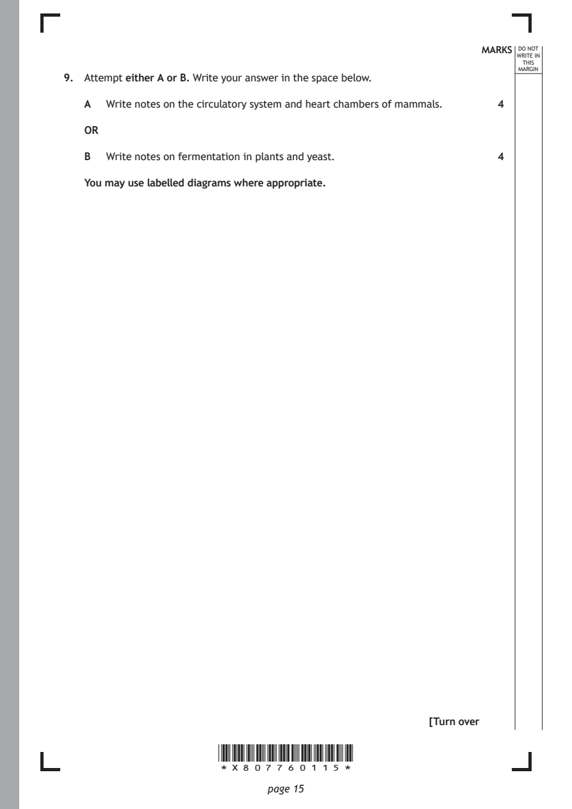
Selectable page text
MARKS _{W}^{D}_{R}^{O}_{I} _{T}^{N}OT
E IN
THIS
MARGIN
9. Attempt either A or B. Write your answer in the space below.
A Write notes on the circulatory system and heart chambers of mammals. 4
OR
B Write notes on fermentation in plants and yeast. 4
You may use labelled diagrams where appropriate.
[Turn over
*X807760115*
page 15PDF page 16
Paper 2, Question 10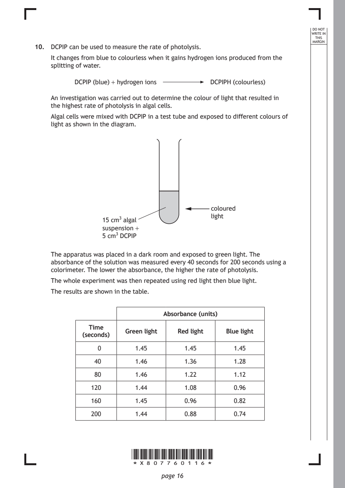
Selectable page text
DO NOT
WRITE IN
THIS
MARGIN
10. DCPIP can be used to measure the rate of photolysis.
It changes from blue to colourless when it gains hydrogen ions produced from the
splitting of water.
DCPIP (blue) + hydrogen ions DCPIPH (colourless)
An investigation was carried out to determine the colour of light that resulted in
the highest rate of photolysis in algal cells.
Algal cells were mixed with DCPIP in a test tube and exposed to different colours of
light as shown in the diagram.
coloured
light
15 cm³ algal
suspension +
5 cm³ DCPIP
The apparatus was placed in a dark room and exposed to green light. The
absorbance of the solution was measured every 40 seconds for 200 seconds using a
colorimeter. The lower the absorbance, the higher the rate of photolysis.
The whole experiment was then repeated using red light then blue light.
The results are shown in the table.
Absorbance (units)
Time
Green light Red light Blue light
(seconds)
0 1.45 1.45 1.45
40 1.46 1.36 1.28
80 1.46 1.22 1.12
120 1.44 1.08 0.96
160 1.45 0.96 0.82
200 1.44 0.88 0.74
*X807760116*
page 16PDF page 17
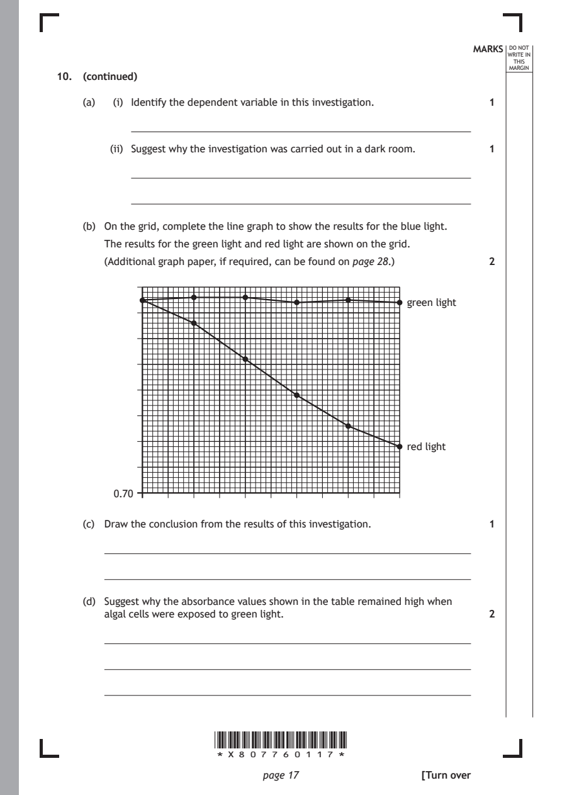
Selectable page text
MARKS _{W}^{D}_{R}^{O}_{I} _{T}^{N}OT
E IN
THIS
MARGIN
10. (continued)
(a) (i) Identify the dependent variable in this investigation. 1
(ii) Suggest why the investigation was carried out in a dark room. 1
(b) On the grid, complete the line graph to show the results for the blue light.
The results for the green light and red light are shown on the grid.
(Additional graph paper, if required, can be found on page 28.) 2
green light
red light
0.70
(c) Draw the conclusion from the results of this investigation. 1
(d) Suggest why the absorbance values shown in the table remained high when
algal cells were exposed to green light. 2
*X807760117*
page 17 [Turn overPDF page 18
Paper 2, Question 11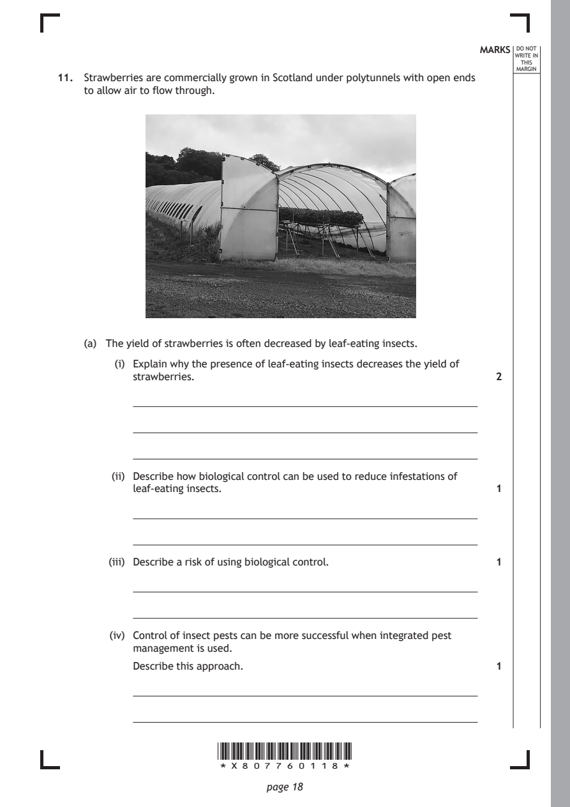
Selectable page text
MARKS _{W}^{D}_{R}^{O}_{I} _{T}^{N}OT
E IN
THIS
MARGIN
11. Strawberries are commercially grown in Scotland under polytunnels with open ends
to allow air to flow through.
(a) The yield of strawberries is often decreased by leaf‑eating insects.
(i) Explain why the presence of leaf‑eating insects decreases the yield of
strawberries. 2
(ii) Describe how biological control can be used to reduce infestations of
leaf‑eating insects. 1
(iii) Describe a risk of using biological control. 1
(iv) Control of insect pests can be more successful when integrated pest
management is used.
Describe this approach. 1
*X807760118*
page 18PDF page 19
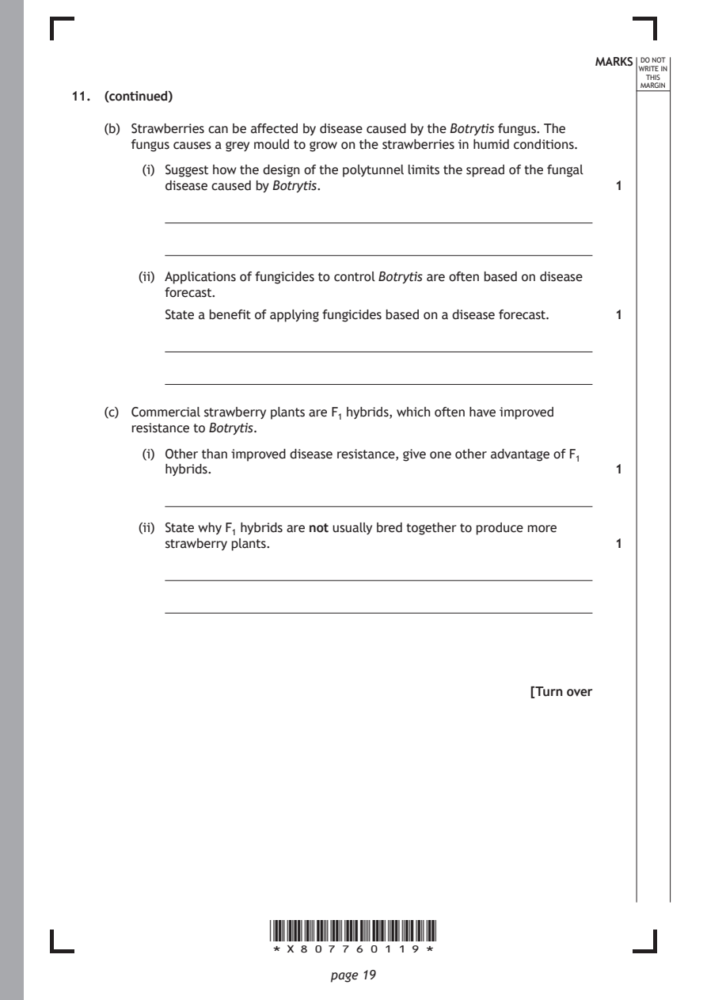
Selectable page text
MARKS _{W}^{D}_{R}^{O}_{I} _{T}^{N}OT
E IN
THIS
MARGIN
11. (continued)
(b) Strawberries can be affected by disease caused by the Botrytis fungus. The
fungus causes a grey mould to grow on the strawberries in humid conditions.
(i) Suggest how the design of the polytunnel limits the spread of the fungal
disease caused by Botrytis. 1
(ii) Applications of fungicides to control Botrytis are often based on disease
forecast.
State a benefit of applying fungicides based on a disease forecast. 1
(c) Commercial strawberry plants are F₁ hybrids, which often have improved
resistance to Botrytis.
(i) Other than improved disease resistance, give one other advantage of F₁
hybrids. 1
(ii) State why F₁ hybrids are not usually bred together to produce more
strawberry plants. 1
[Turn over
*X807760119*
page 19PDF page 20
Paper 2, Question 12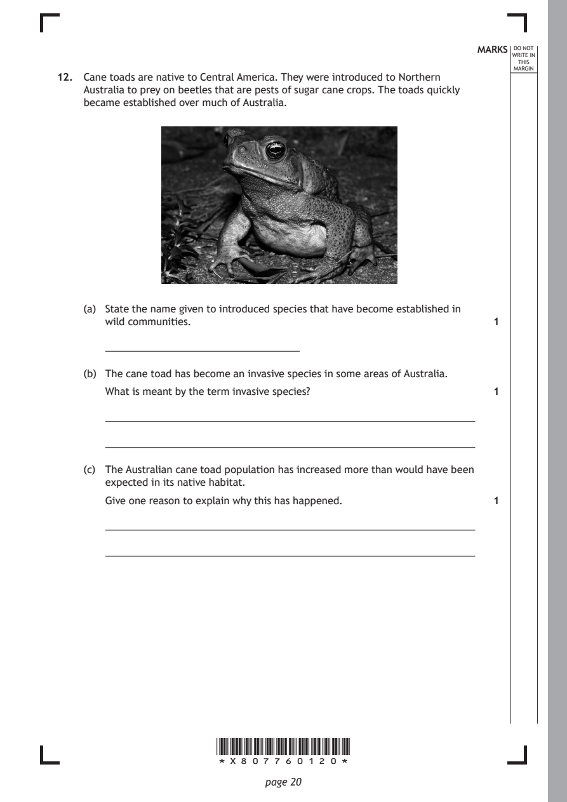
Selectable page text
MARKS _{W}^{D}_{R}^{O}_{I} _{T}^{N}OT
E IN
THIS
MARGIN
12. Cane toads are native to Central America. They were introduced to Northern
Australia to prey on beetles that are pests of sugar cane crops. The toads quickly
became established over much of Australia.
(a) State the name given to introduced species that have become established in
wild communities. 1
(b) The cane toad has become an invasive species in some areas of Australia.
What is meant by the term invasive species? 1
(c) The Australian cane toad population has increased more than would have been
expected in its native habitat.
Give one reason to explain why this has happened. 1
*X807760120*
page 20PDF page 21
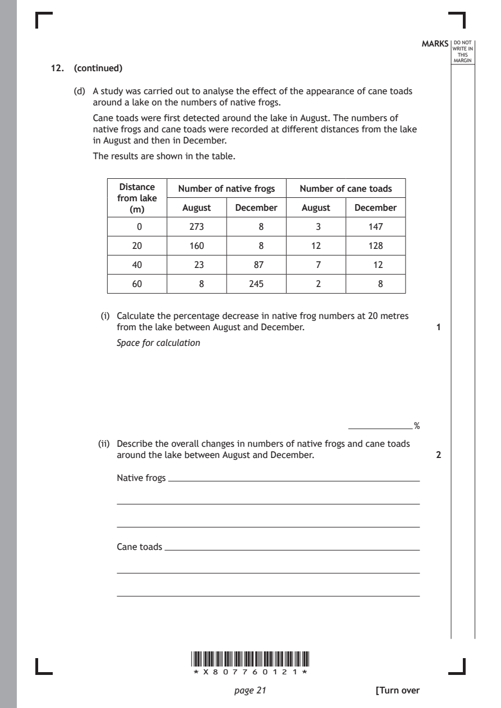
Selectable page text
MARKS _{W}^{D}_{R}^{O}_{I} _{T}^{N}OT
E IN
THIS
MARGIN
12. (continued)
(d) A study was carried out to analyse the effect of the appearance of cane toads
around a lake on the numbers of native frogs.
Cane toads were first detected around the lake in August. The numbers of
native frogs and cane toads were recorded at different distances from the lake
in August and then in December.
The results are shown in the table.
Distance Number of native frogs Number of cane toads
from lake
(m) August December August December
0 273 8 3 147
20 160 8 12 128
40 23 87 7 12
60 8 245 2 8
(i) Calculate the percentage decrease in native frog numbers at 20 metres
from the lake between August and December. 1
Space for calculation
%
(ii) Describe the overall changes in numbers of native frogs and cane toads
around the lake between August and December. 2
Native frogs
Cane toads
*X807760121*
page 21 [Turn overPDF page 22
Paper 2, Question 13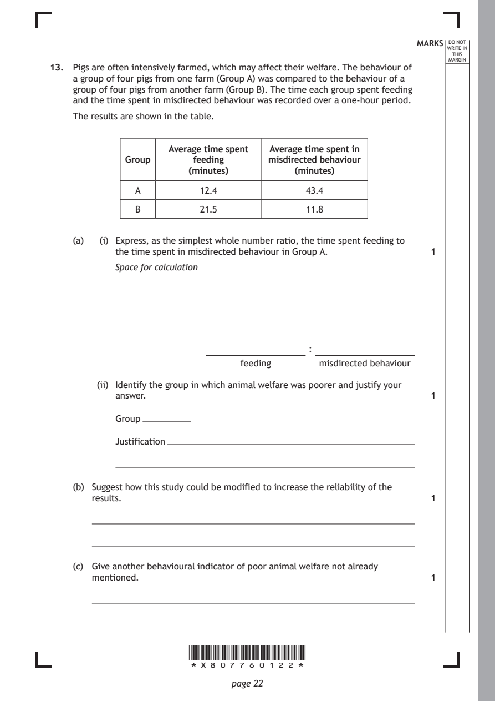
Selectable page text
MARKS _{W}^{D}_{R}^{O}_{I} _{T}^{N}OT
E IN
THIS
MARGIN
13. Pigs are often intensively farmed, which may affect their welfare. The behaviour of
a group of four pigs from one farm (Group A) was compared to the behaviour of a
group of four pigs from another farm (Group B). The time each group spent feeding
and the time spent in misdirected behaviour was recorded over a one‑hour period.
The results are shown in the table.
Average time spent Average time spent in
Group feeding misdirected behaviour
(minutes) (minutes)
A 12.4 43.4
B 21.5 11.8
(a) (i) Express, as the simplest whole number ratio, the time spent feeding to
the time spent in misdirected behaviour in Group A. 1
Space for calculation
:
feeding misdirected behaviour
(ii) Identify the group in which animal welfare was poorer and justify your
answer. 1
Group
Justification
(b) Suggest how this study could be modified to increase the reliability of the
results. 1
(c) Give another behavioural indicator of poor animal welfare not already
mentioned. 1
*X807760122*
page 22PDF page 23
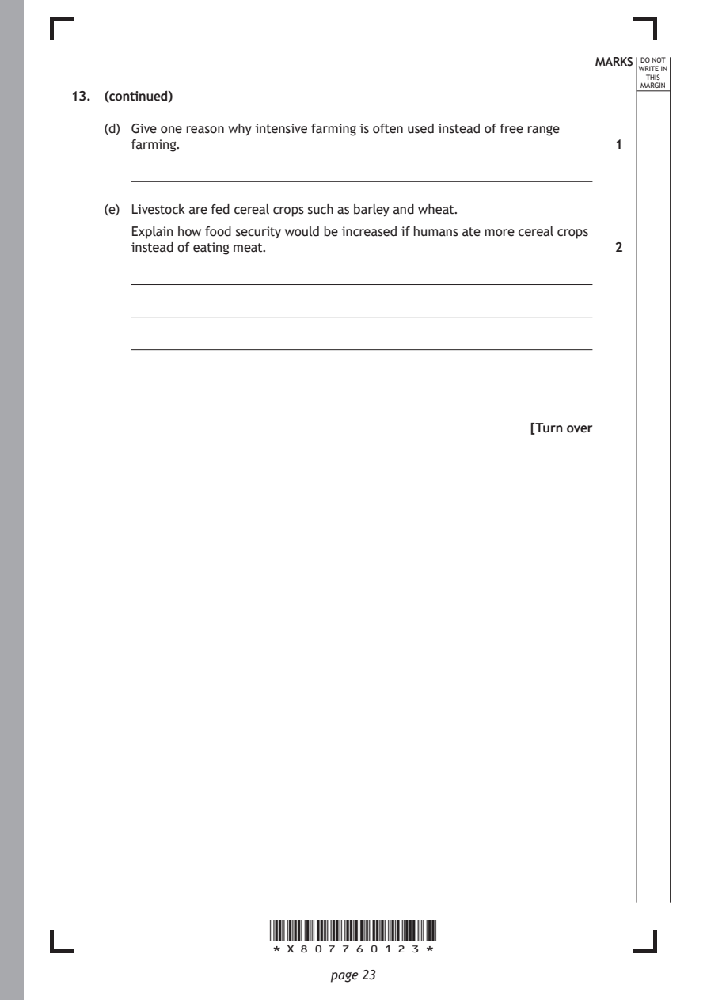
Selectable page text
MARKS _{W}^{D}_{R}^{O}_{I} _{T}^{N}OT
E IN
THIS
MARGIN
13. (continued)
(d) Give one reason why intensive farming is often used instead of free range
farming. 1
(e) Livestock are fed cereal crops such as barley and wheat.
Explain how food security would be increased if humans ate more cereal crops
instead of eating meat. 2
[Turn over
*X807760123*
page 23PDF page 24
Paper 2, Question 14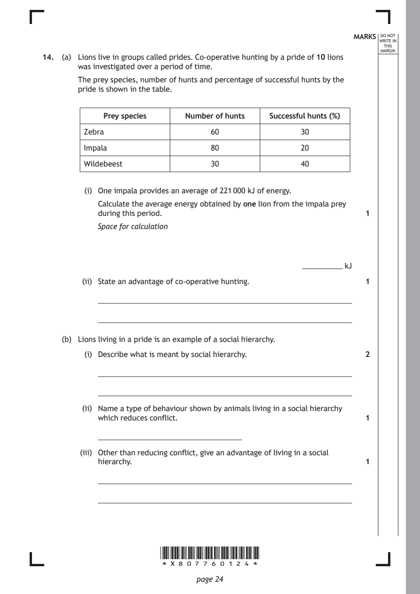
Selectable page text
MARKS _{W}^{D}_{R}^{O}_{I} _{T}^{N}OT
E IN
THIS
MARGIN
14. (a) Lions live in groups called prides. Co‑operative hunting by a pride of 10 lions
was investigated over a period of time.
The prey species, number of hunts and percentage of successful hunts by the
pride is shown in the table.
Prey species Number of hunts Successful hunts (%)
Zebra 60 30
Impala 80 20
Wildebeest 30 40
(i) One impala provides an average of 221 000 kJ of energy.
Calculate the average energy obtained by one lion from the impala prey
during this period. 1
Space for calculation
kJ
(ii) State an advantage of co‑operative hunting. 1
(b) Lions living in a pride is an example of a social hierarchy.
(i) Describe what is meant by social hierarchy. 2
(ii) Name a type of behaviour shown by animals living in a social hierarchy
which reduces conflict. 1
(iii) Other than reducing conflict, give an advantage of living in a social
hierarchy. 1
*X807760124*
page 24PDF page 25
Paper 2, Question 15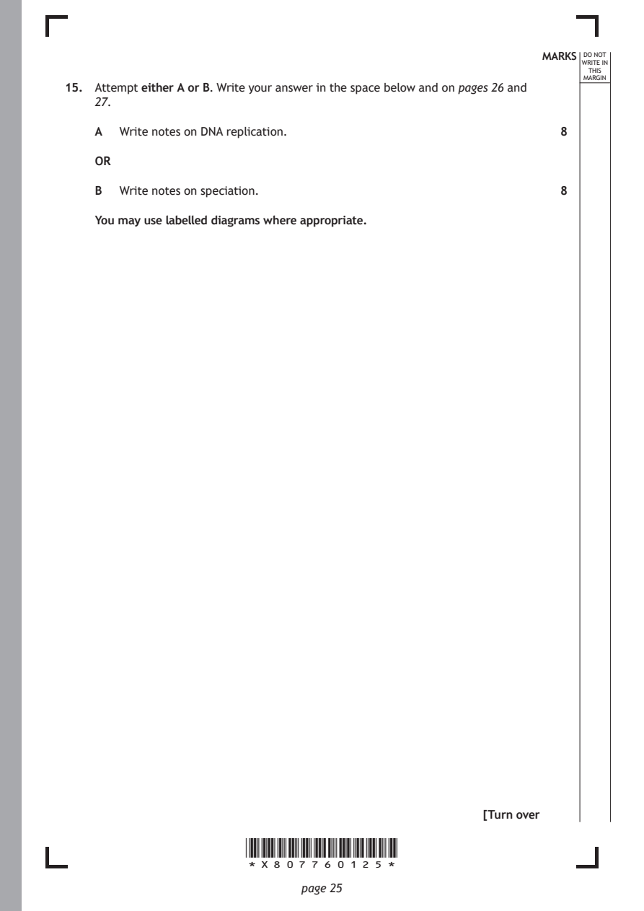
Selectable page text
MARKS _{W}^{D}_{R}^{O}_{I} _{T}^{N}OT
E IN
THIS
MARGIN
15. Attempt either A or B. Write your answer in the space below and on pages 26 and
27.
A Write notes on DNA replication. 8
OR
B Write notes on speciation. 8
You may use labelled diagrams where appropriate.
[Turn over
*X807760125*
page 25PDF page 26
Selectable page text
MARKS _{W}^{D}_{R}^{O}_{I} _{T}^{N}OT
E IN
THIS
MARGIN
ADDITIONAL SPACE FOR ANSWER to question 15
*X807760126*
page 26PDF page 27
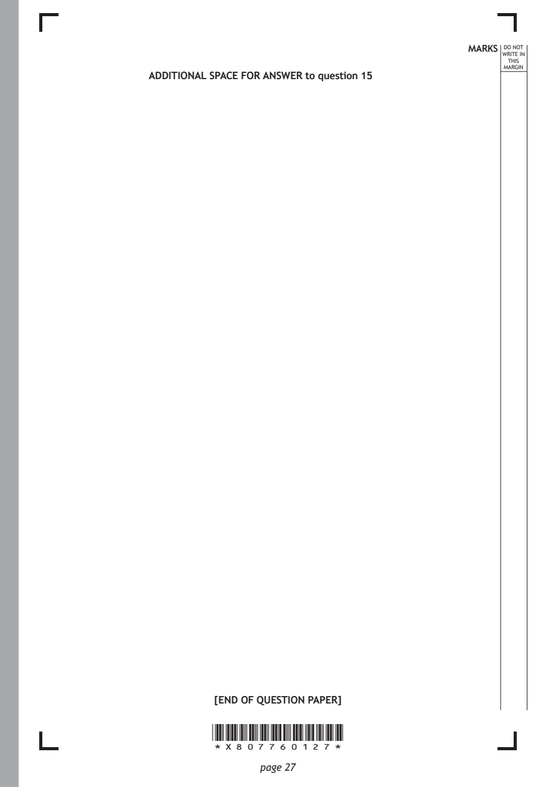
Selectable page text
MARKS _{W}^{D}_{R}^{O}_{I} _{T}^{N}OT
E IN
THIS
MARGIN
ADDITIONAL SPACE FOR ANSWER to question 15
[END OF QUESTION PAPER]
*X807760127*
page 27PDF page 28
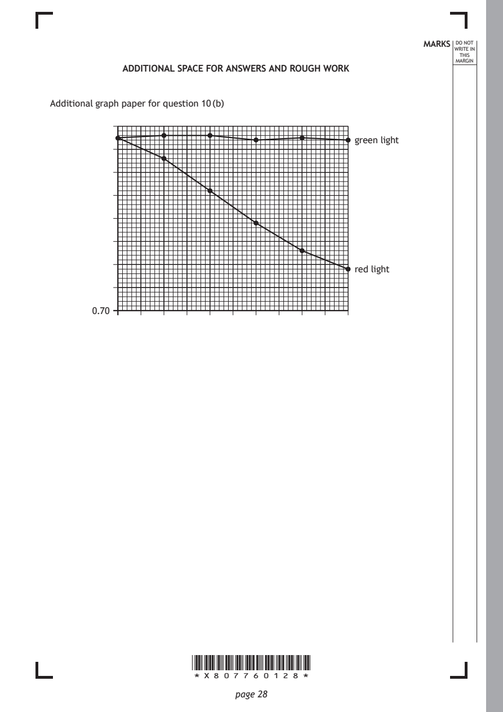
Selectable page text
MARKS _{W}^{D}_{R}^{O}_{I} _{T}^{N}OT
E IN
THIS
MARGIN
ADDITIONAL SPACE FOR ANSWERS AND ROUGH WORK
Additional graph paper for question 10 (b)
green light
red light
0.70
*X807760128*
page 28PDF page 29
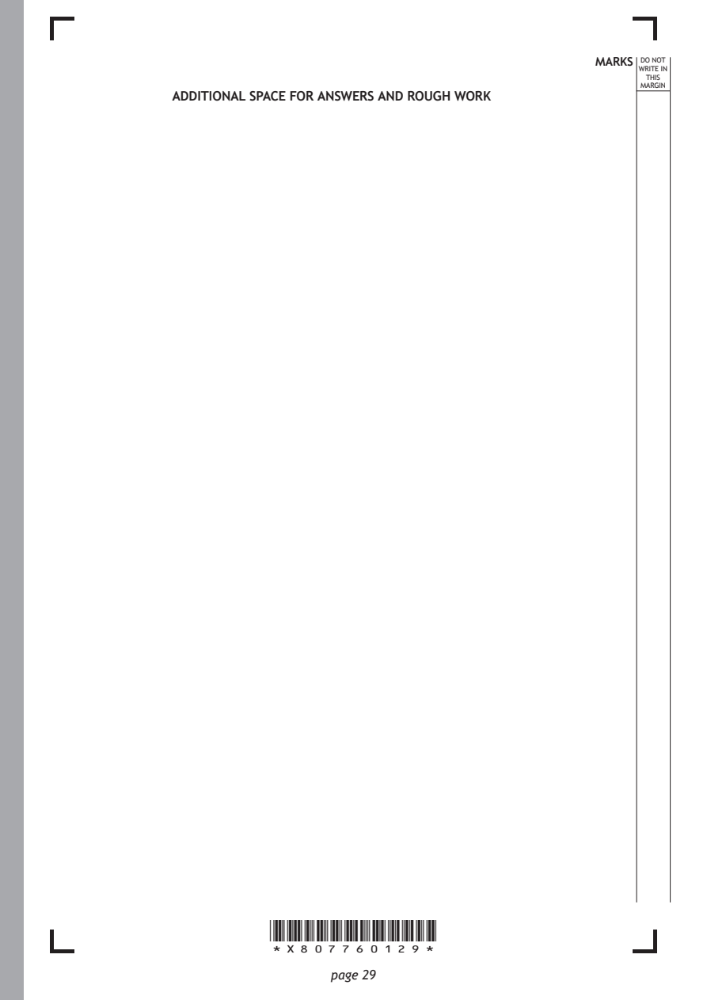
Selectable page text
MARKS _{W}^{D}_{R}^{O}_{I} _{T}^{N}OT
E IN
THIS
MARGIN
ADDITIONAL SPACE FOR ANSWERS AND ROUGH WORK
*X807760129*
page 29PDF page 30
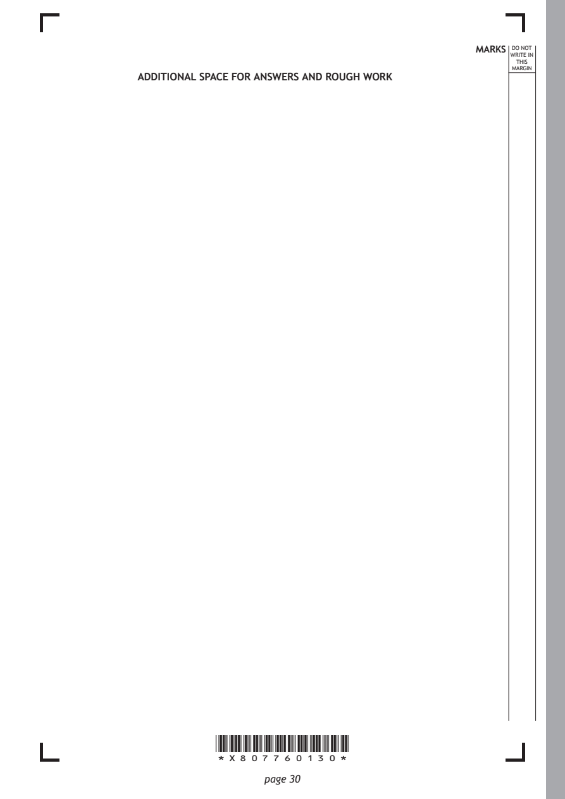
Selectable page text
MARKS _{W}^{D}_{R}^{O}_{I} _{T}^{N}OT
E IN
THIS
MARGIN
ADDITIONAL SPACE FOR ANSWERS AND ROUGH WORK
*X807760130*
page 30PDF page 31
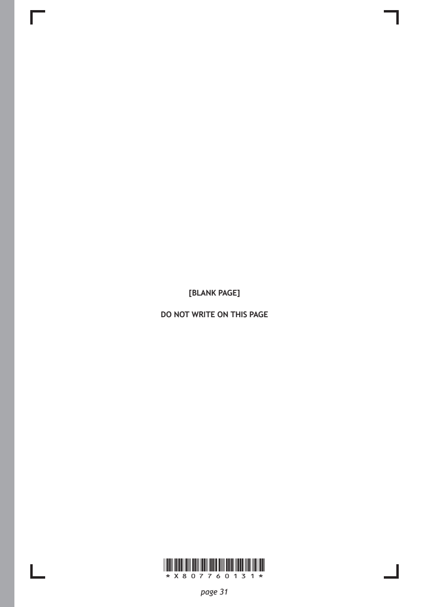
Selectable page text
[BLANK PAGE]
DO NOT WRITE ON THIS PAGE
*X807760131*
page 31PDF page 32
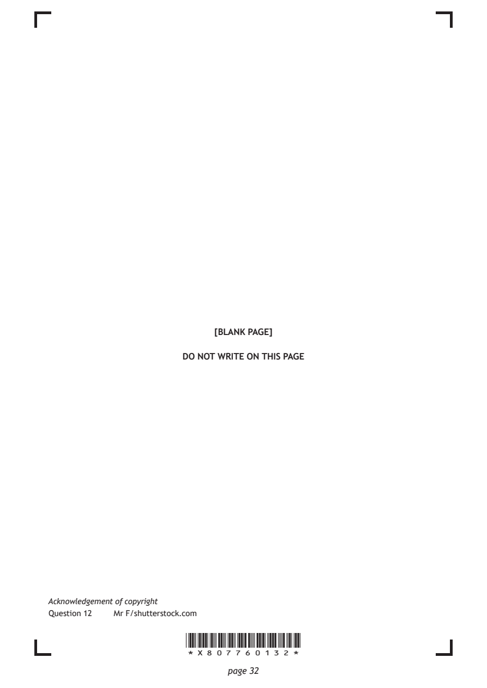
Selectable page text
[BLANK PAGE]
DO NOT WRITE ON THIS PAGE
Acknowledgement of copyright
Question 12 Mr F/shutterstock.com
*X807760132*
page 32